sejarah geologi kepulauan indonesi mempengaruhi keanekaragaman fauna di indonesia, kepulauan indonesia secara geologi merupakan pertemuan antara lempeng asia dan lempeng australia, fauna tersebut tidak hidup di tempat atau wilayah yang sama, keadaan fauna tersebut di pengaruhi oleh keadaan persebaranya. persebaran fauna di indonesia, sebagai brikut
A. PERSEBARAN FAUNA DI indonesia
- Persebaran fauna di indonesia dipengaruhi oleh persebaran tumbuhan, keadaan geografis indonesia yang berada di antara benua asia dan australia, Dan kondisi geologis indonesia. Berdasarkan faktor-fator tersebut. pola persebaran fauna di indonesia di bedakan menjadi tiga kelompok wilayah, yaitu wilayah fauna indonesia tipe asitis, tipe pralihan(asia-australia), dan tipe australia
a. WILAYAH FAUNA TIPE ASIATIS
- fauna atau hewan tipe Asiatis tersebar di daerah indonesia bagian barat atau sering di sebut wilayah fauna tanah sunda. wilayah fauna tipe asiatis dengan wilayah fauna tipe tipe asia-australia di batasi dengan garis WELLACE, jenis jenis fauna yang ada di bagian barat ini meliputi :
1. burung tipe asiatis yang ada di indonesia bagian barat, terdiri atas:
- ~ ELANG BONDOL

- ~ JALAK
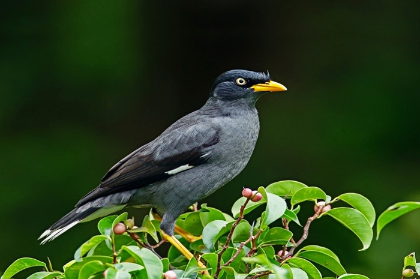
- ~ MERAK
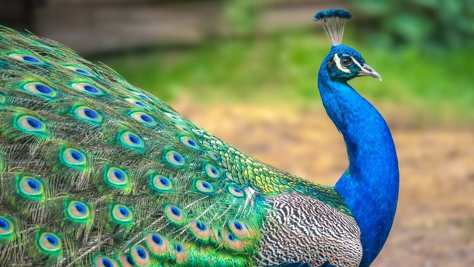
- ~ AYAM HUTAN

- ~ BURUNG HANTU

- ~ KUTILANG
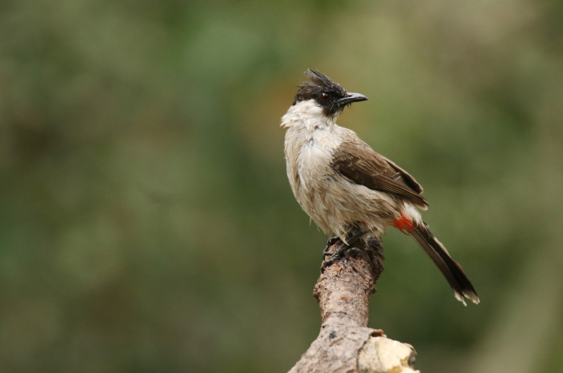
2. Reptil tipe asiatis yang ada di indonesia bagian barat, terdiri atas:
- ~ BIAWAK
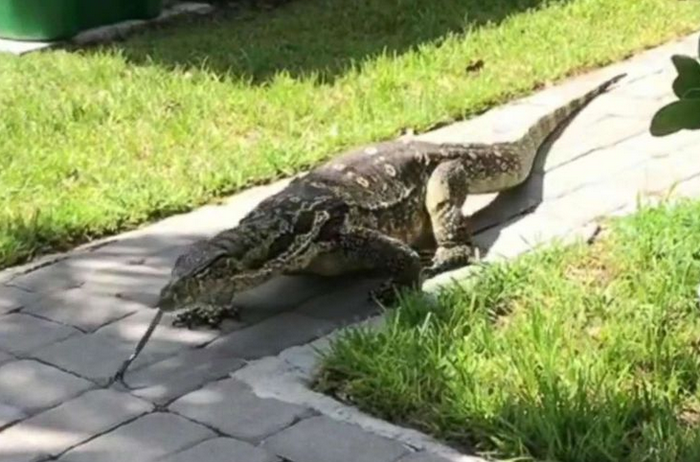
- ~ BUAYA
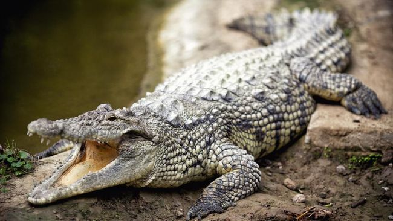
- ~ KURA-KURA
- ~ KADAL
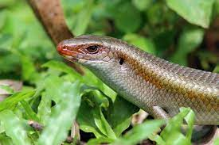
- ~ ULAR
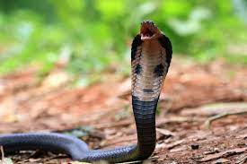
- ~ TOKEK
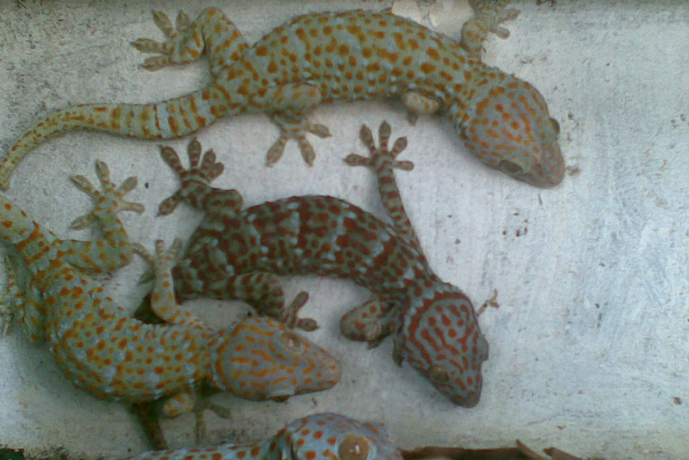
- ~ BUNGLON
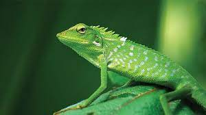
- ~ TRENGGILING
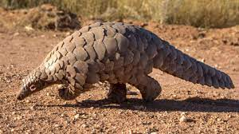
3. Ikan tipe asiatis yang ada di indonesia bagian barat, terdiri atas:
- ~ MUJAIR
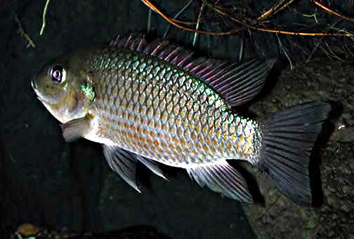
- ~ ARWANA
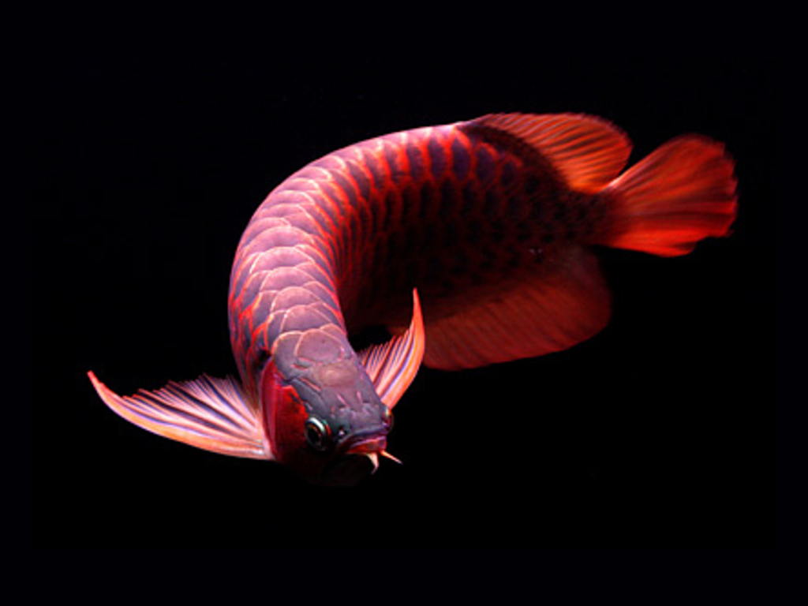
- ~ PESUT ( MAMALIA AIR TAWAR )
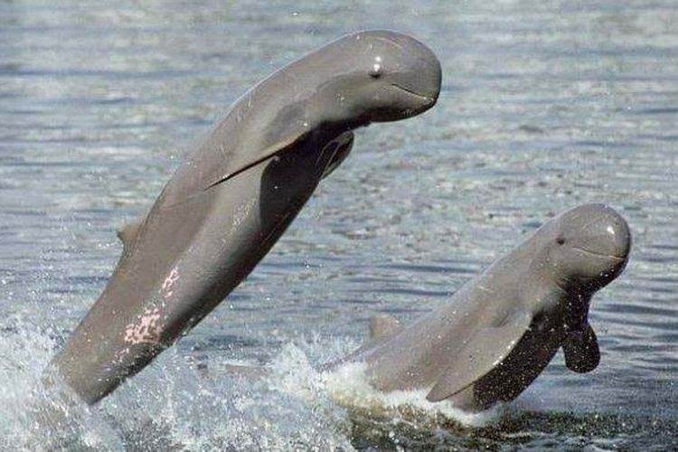
4. Serangga tipe asiatis yang ada di indonesia bagian barat, terdiri atas:
- ~ KUMBANG
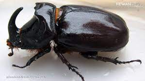
- ~ KUPU-KUPU

- ~ KEPIK
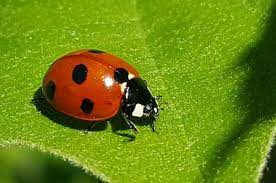
- ~ BELALANG
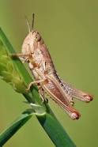
- ~ NYAMUK
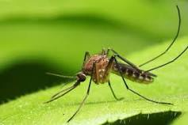
- ~ LALAT
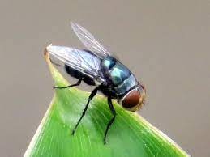
5. Mamalia tipe asiatis yang ada di indonesia bagian barat, terdiri atas:
- ~ GAJAH
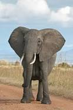
- ~ BADAK BERCULA SATU

- ~ RUSA
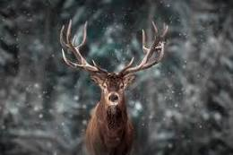
- ~ TAPIR
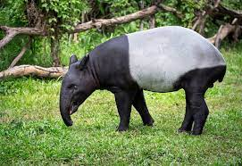
- ~ BANTENG
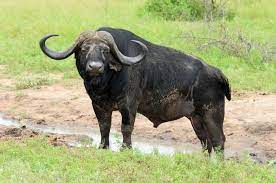
- ~ KERBAU
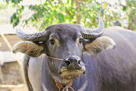
- ~ MONYET
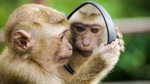
- ~ ORANG UTAN

- ~ HARIMAU
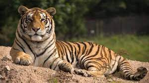
- ~ MACAN TUTUL

- ~ MACAN KUMBANG

- ~ TIKUS
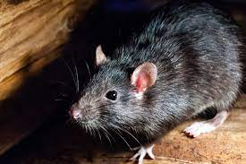
- ~ BAJING

- ~ BERUANG
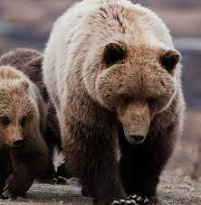
- ~ KIJANG
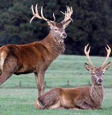
- ~ ANJING HUTAN

- ~ KELELAWAR
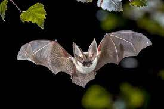
- ~ LANDAK
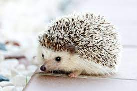
- ~ BABI HUTAN

- ~ KANCIL
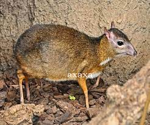
- ~ KUKANG
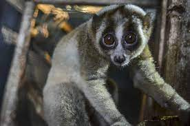
b. WILAYAH FAUNA TIPE ASIA-AUSTRALIA
- Wilayah ini sering disebut sebagai wilayah fauna indonesia tengah atau wilayah fauna kepulauan wallace, fauna tipe ini memiliki ke khasan sendiri yaitu hewan di di daerah ini mirip dengan tipe Asiatis, tetapi juga merupakan tipe Australis. fauna tersebut antara lain:
1. Mamalia tipe asia-autralia yang ada di indonesia, terdiri atas:
- ~ ANOA
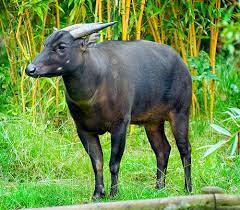
- ~ BABI RUSA

- ~ TAPIR
- ~ IKAN DUYUNG

- ~ KUSKUS

- ~ MONYET HITAM

- ~ BERUANG
- ~ TERSIUS
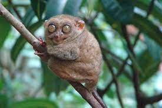
- ~ MONYET
- ~ KUDA
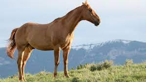
- ~ SAPI
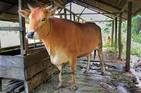
- ~ BANTENG
2. Amfibi tipe asia-autralia yang ada di indonesia, terdiri atas:
- ~ KATAK POHON

- ~ KATAK TERBANG

- ~ KATAK AIR

3. Reptilia tipe asia-autralia yang ada di indonesia, terdiri atas:
- ~ ULAR
- ~ BUAYA
- ~ BIAWAK
- ~ KOMODO
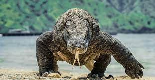
4. Burung tipe asia-autralia yang ada di indonesia, terdiri atas:
- ~ BURUNG DEWATA

- ~ MALEO

- ~ MANDAR

- ~ RAJA UDANG
- ~ KAKATUA

- ~ MERPATI

- ~ ANGSA

b. WILAYAH FAUNA TIPE AUSTRALIA
- Wilayah ini sering disebut sebagai wilayah fauna indonesia bagian timur atau wilayah tanah sahul, wilayah fauna bagian indonesia dengan fauna indonesia bagian tengah di batasi oleh garris Weber, dimana jenis jenisnya antara lain :
1. Burung tipe autralia yang ada di indonesia, terdiri atas:
- ~ BEO

- ~ CENDRAWASIH

- ~ KASUARI

- ~ RAJA UDANG

- ~ KAKATUA
- ~ NURI

2. Mamalia tipe autralia yang ada di indonesia, terdiri atas:
- ~ KANGURU
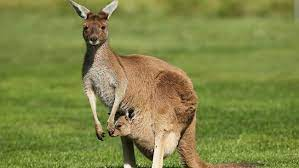
- ~ WALABI
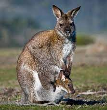
- ~ BERUANG
- ~ KOALA
- ~ LANDAK IRIAN

- ~ OPOSUM LAYANG

- ~ KUSKUS
- ~ BIAWAK
- ~ KANGURU POHON

- ~ KELELAWAR
3. reptilia tipe autralia yang ada di indonesia, terdiri atas:
- ~ BUAYA
- ~ ULAR
- ~ KADAL
- ~ KURA-KURA
- ~ BIAWAK
4. amfibi tipe autralia yang ada di indonesia, terdiri atas:
- ~ KATAK POHON
- ~ KATAK TERBANG
- ~ KATAK AIR
b. PERBEDAAN ANTARA FAUNA DI DAERAH INDONESIA
1). Tipe asiattis tidak ememiliki hewan berkantong, sedangkan tipe Australia terdapat banyak hewan berkantong
2). Dikawasan indonesia bagian asiatis terdapat bnyak jenis kera sedangkan pada tipe australis tida ada jenis kera
3). jenis ikan air tawar yang terdapat pada tipe asiatis sangat banyak di bandingkan dengan derah bertipe australis
4). terdapat bnyak burung yang berwarna di kawasan tipe australis sedangkan tipe asiatis hanya memilki sedikit jenis burung yang berwarna